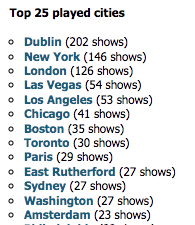

# load required libraries
library(dplyr)
library(readr)
# read file
u2data <- read_csv("u2data/archive/u2data_all_shows_clean.csv")Initial Data Exploration
Comparing my data and numbers with u2gigs.com
I performed an initial data exploration, comparing some numbers with the U2 tour statistics listed on the u2gigs.com site page: https://www.u2gigs.com/tourdb-stats.html. Remember, that is the source of my data.
# number of countries where U2 played shows
cat("Number of countries: ", nrow(unique(u2data[,c('country')])), "\n")Number of countries: 48 The number at u2gigs.com (October 2024) is 49 (https://www.u2gigs.com/all-countries.html). We see here that in my data there is 1 country less compared to what is listed at u2gigs.com. Now let’s check the number of different songs played over all shows.
# number of different songs played by U2 at the shows
cat("Number of songs played at the shows: ", nrow(unique(u2data[,c('song_title')])), "\n")Number of songs played at the shows: 993 The number at u2gigs.com (October 2024) is 994 (https://www.u2gigs.com/most-played-songs.html). We see here that in my data there is 1 song less compared to what is listed at u2gigs.com. Now let’s check number of shows played in some cities.
# cities with most shows played (only top 5 plus Amsterdam)
aggregate(data=u2data, showID ~ city, subset = city %in% c('Dublin', 'New York', 'London', 'Las Vegas', 'Los Angeles', 'Amsterdam'), function(x) length(unique(x))) %>%
arrange(.,desc(showID)) city showID
1 Dublin 145
2 New York 131
3 London 100
4 Las Vegas 53
5 Los Angeles 50
6 Amsterdam 19When we compare that with u2gigs.com (Oct 2024 screen shot below) we see that the numbers are not the same.

Let’s dive into the Amsterdam shows where my data contains 19 and u2gigs.com lists 23.
# shows done in Amsterdam venues
amsterdam_data <- subset(u2data, city == 'Amsterdam', select = c("showID","city","venue", "tour"))
aggregate(data=amsterdam_data, showID ~ tour + venue, function(x) length(unique(x))) %>%
arrange(.,desc(tour)) tour venue showID
1 U2 Vertigo Tour Amsterdam ArenA 3
2 U2 Various Dates Muziekgebouw aan 't IJ 1
3 U2 Various Dates Paradiso 1
4 U2 Various Dates Westerunie 1
5 U2 October Tour Paradiso 1
6 U2 Lovetown Tour Rai Europa Hal 1
7 U2 Joshua Tree Tour 2017 Amsterdam ArenA 2
8 U2 Innocence + Experience Tour Ziggo Dome 4
9 U2 Experience + Innocence Tour Ziggo Dome 2
10 U2 Boy Tour The Milkyway 1
11 U2 360° Tour Amsterdam ArenA 2The u2gigs.com info:
The 4 shows that are missing in my data are:
- 1981-02-11: Unknown Bar - Amsterdam, Netherlands
- 1981-02-11: Paradiso - Amsterdam, Netherlands
- 1989-12-19: Rai Europa Hal - Amsterdam, Netherlands
- 1989-12-20: Rai Europa Hal - Amsterdam, Netherlands
Checking these on u2gigs.com, we see that these are all shows that do not have a set list (no played songs listed), while all the other 19 Amsterdam shows do have a set list. Confirming that these are missing from my data:
# check Amsterdam shows that were missing before
missing_Amsterdam_shows <- subset(u2data, date == '1981-02-11' | date == '1989-12-19' | date == '1989-12-20', select = c("date","venue"))
print(missing_Amsterdam_shows)# A tibble: 0 × 2
# ℹ 2 variables: date <date>, venue <chr>I concluded that the shows without set lists had not been stored by my scraping code. Indeed, when I went back to check my scraping code I saw where the issue was. Thus, I adapted the code to retrieve those 297 shows without set list, and then added them to the final data file:
First create new file with header:
head -n 1 u2data_all_shows_clean.csv > u2data_all_shows_clean_final.csvThen concatenate content from 3 data files into the new file (skipping headers):
tail -n +2 -q u2data_all_shows_clean.csv >> u2data_all_shows_clean_final.csv
tail -n +2 -q u2analytics_data_nosetlistshows-dates.csv >> u2data_all_shows_clean_final.csvConfirm data after adding the shows without setlist
After adding the shows without set list I loaded and explored the data again.
# load required libraries
library(dplyr)
library(readr)
# read data
# note: file name was changed after an issue with city names was detected
u2data <- read_csv('u2data/archive/u2data_all_shows_clean_final_incorrect_cities.csv')# number of countries where U2 played shows
cat("Number of countries: ", nrow(unique(u2data[,c('country')])), "\n")Number of countries: 49 Remember, from earlier, that the number of countries listed at u2gigs.com is 49. So, this is now correct in my data. Now let’s look at the number of different songs played again.
# number of different songs played by U2 at the shows
cat("Number of songs played at the shows: ", nrow(unique(u2data[,c('song_title')])), "\n")Number of songs played at the shows: 994 The number at u2gigs.com (October 2024) is 994 (https://www.u2gigs.com/most-played-songs.html), which is the same as in my data.
# cities with most shows played (only top 5 plus Amsterdam)
aggregate(data=u2data, showID ~ city, subset = city %in% c('Dublin', 'New York', 'London', 'Las Vegas', 'Los Angeles', 'Amsterdam'), function(x) length(unique(x))) %>%
arrange(.,desc(showID)) city showID
1 Dublin 202
2 New York 146
3 London 125
4 Las Vegas 54
5 Los Angeles 53
6 Amsterdam 23This still does not fully coincide with the u2gigs.com statistics:
I’ll look at that in a bit but first let’s check the Amsterdam shows again.
# shows done in Amsterdam venues
amsterdam_data <- subset(u2data, city == 'Amsterdam', select = c("showID","city","venue", "tour"))
aggregate(data=amsterdam_data, showID ~ tour + venue, function(x) length(unique(x))) %>%
arrange(.,desc(tour)) tour venue showID
1 U2 Vertigo Tour Amsterdam ArenA 3
2 U2 Various Dates Muziekgebouw aan 't IJ 1
3 U2 Various Dates Paradiso 1
4 U2 Various Dates Unknown Bar 1
5 U2 Various Dates Westerunie 1
6 U2 October Tour Paradiso 1
7 U2 Lovetown Tour Rai Europa Hal 3
8 U2 Joshua Tree Tour 2017 Amsterdam ArenA 2
9 U2 Innocence + Experience Tour Ziggo Dome 4
10 U2 Experience + Innocence Tour Ziggo Dome 2
11 U2 Boy Tour Paradiso 1
12 U2 Boy Tour The Milkyway 1
13 U2 360° Tour Amsterdam ArenA 2The 4 shows that were missing earlier now do appear in my data.
# check Amsterdam shows that were missing before
missing_Amsterdam_shows <- subset(u2data, date == '1981-02-11' | date == '1989-12-19' | date == '1989-12-20', select = c("date", "venue"))
print(missing_Amsterdam_shows)# A tibble: 4 × 2
date venue
<date> <chr>
1 1981-02-11 Paradiso
2 1989-12-19 Rai Europa Hal
3 1989-12-20 Rai Europa Hal
4 1981-02-11 Unknown Bar Fixing incorrect city and venue names
As mentioned, the number of shows in some cities did not fully match the number listed at u2gigs.com. I explored this by obtaining a list of all cities listed at u2gigs.com (https://www.u2gigs.com/all-locations-city.html), and by getting a list of unique city names in my data:
# get and print unique cities
print(unique(u2data[,c('city')]))# A tibble: 410 × 1
city
<chr>
1 Dublin
2 Glasgow
3 Rotterdam
4 Amsterdam
5 New York
6 Washington
7 Belfast
8 Drammen
9 Edinburgh
10 Stockholm
# ℹ 400 more rowsI took the list of cities from both sources in Excel and identified the different city entries. I observed 5 strange city entries in my data:
- arne
- elin
- enis
- losters
- rent
I then retrieved more info about these entries in my data, including the showID so that I could manually check these shows at u2gigs.com.
# check cities not listed at u2gigs.com
extra_cities <- subset(u2data, city == 'arne' | city == 'elin' | city == 'enis' | city == 'losters' | city == 'rent', select = c("showID", "country", "city", "date","venue"))
print(extra_cities)# A tibble: 247 × 5
showID country city date venue
<dbl> <chr> <chr> <date> <chr>
1 978 France arne 1980-12-04 Pavillon Baltard - Nogent-su
2 978 France arne 1980-12-04 Pavillon Baltard - Nogent-su
3 978 France arne 1980-12-04 Pavillon Baltard - Nogent-su
4 978 France arne 1980-12-04 Pavillon Baltard - Nogent-su
5 978 France arne 1980-12-04 Pavillon Baltard - Nogent-su
6 978 France arne 1980-12-04 Pavillon Baltard - Nogent-su
7 978 France arne 1980-12-04 Pavillon Baltard - Nogent-su
8 978 France arne 1980-12-04 Pavillon Baltard - Nogent-su
9 978 France arne 1980-12-04 Pavillon Baltard - Nogent-su
10 978 France arne 1980-12-04 Pavillon Baltard - Nogent-su
# ℹ 237 more rowsI concluded that the following correct city names corresponded to these entries:
- arne -> Nogent-sur-Marne
- elin -> Vaulx-en-Velin
- enis -> Saint-Denis
- losters -> Davos-Klosters
- rent -> Stoke-on-Trent
All these issues were caused by a flaw in the scraping code when using a regular expression to separate the venue from the city. The issue occurred either when dashes ‘-’ were present in the city name or in the venue name.
I corrected this with the following commands in the data file:
# Step 1: change "Pavillon Baltard - Nogent-su","arne" to "Pavillon Baltard","Nogent-sur-Marne"
# first check pattern
grep '\"Pavillon Baltard - Nogent-su\",\"arne\"' u2data_all_shows_clean_final.csv | wc -l
12
# now replace
awk '{gsub(/\"Pavillon Baltard - Nogent-su\",\"arne\"/,"\"Pavillon Baltard\",\"Nogent-sur-Marne\"")}1' u2data_all_shows_clean_final.csv > u2data_all_shows_clean_final2.csv
# check result
grep '\"Pavillon Baltard - Nogent-su\",\"arne\"' u2data_all_shows_clean_final2.csv | wc -l
0
grep '\"Pavillon Baltard\",\"Nogent-sur-Marne\"' u2data_all_shows_clean_final2.csv | wc -l
12
# Step 2: change "Ecole Nationale des Travaux Publics - Vaulx-e","elin" to "Ecole Nationale des Travaux Public","Vaulx-en-Velin"
# first check pattern
grep '\"Ecole Nationale des Travaux Publics - Vaulx-e\",\"elin\"' u2data_all_shows_clean_final2.csv | wc -l
1
# now replace
awk '{gsub(/\"Ecole Nationale des Travaux Publics - Vaulx-e\",\"elin\"/,"\"Ecole Nationale des Travaux Publics\",\"Vaulx-en-Velin\"")}1' u2data_all_shows_clean_final2.csv > u2data_all_shows_clean_final3.csv
# check result
grep '\"Ecole Nationale des Travaux Publics - Vaulx-e\",\"elin\"' u2data_all_shows_clean_final3.csv | wc -l
0
grep '\"Ecole Nationale des Travaux Publics\",\"Vaulx-en-Velin\"' u2data_all_shows_clean_final3.csv | wc -l
1
# Step 3: change "Stade de France - Sain","enis" to "Stade de France","Saint-Denis"
# first check pattern
grep '\"Stade de France - Sain\",\"enis\"' u2data_all_shows_clean_final3.csv | wc -l
232
# now replace
awk '{gsub(/\"Stade de France - Sain\",\"enis\"/,"\"Stade de France\",\"Saint-Denis\"")}1' u2data_all_shows_clean_final3.csv > u2data_all_shows_clean_final4.csv
# check result
grep '\"Stade de France - Sain\",\"enis\"' u2data_all_shows_clean_final4.csv | wc -l
0
grep '\"Stade de France","Saint-Denis\"' u2data_all_shows_clean_final4.csv | wc -l
1
# Step 4: change "World Economic Forum - Davo","losters" to "World Economic Forum","Davos-Klosters"
# first check pattern
grep '\"World Economic Forum - Davo\",\"losters\"' u2data_all_shows_clean_final4.csv | wc -l
1
# now replace
awk '{gsub(/\"World Economic Forum - Davo\",\"losters\"/,"\"World Economic Forum\",\"Davos-Klosters\"")}1' u2data_all_shows_clean_final4.csv > u2data_all_shows_clean_final5.csv
# check result
grep '\"World Economic Forum - Davo\",\"losters\"' u2data_all_shows_clean_final5.csv | wc -l
0
grep '\"World Economic Forum","Davos-Klosters\"' u2data_all_shows_clean_final5.csv | wc -l
1
# Step 5: change "King's Hall - Stoke-o","rent" to "King's Hall","Stoke-on-Trent"
# first check pattern
grep "\"King\'s Hall - Stoke-o\",\"rent\"" u2data_all_shows_clean_final5.csv | wc -l
1
# now replace
# note that \047 is used to match the single quote
awk '{gsub(/\"King\047s Hall - Stoke-o\",\"rent\"/,"\"King\047s Hal\",\"Stoke-on-Trent\"")}1' u2data_all_shows_clean_final5.csv > u2data_all_shows_clean_final6.csv
# check result
grep "\"King\'s Hall - Stoke-o\",\"rent\"" u2data_all_shows_clean_final6.csv | wc -l | wc -l
0
grep "\"King's Hal\",\"Stoke-on-Trent\"" u2data_all_shows_clean_final6.csv | wc -l
1
# file house keeping
mv u2data_all_shows_clean_final.csv archive/u2data_all_shows_clean_final_incorrect_cities.csv
mv u2data_all_shows_clean_final2.csv archive/u2data_all_shows_clean_final2.csv
mv u2data_all_shows_clean_final3.csv archive/u2data_all_shows_clean_final3.csv
mv u2data_all_shows_clean_final4.csv archive/u2data_all_shows_clean_final4.csv
mv u2data_all_shows_clean_final5.csv archive/u2data_all_shows_clean_final5.csv
mv u2data_all_shows_clean_final6.csv u2data_all_shows_clean_final.csvFixing additional issues in the song_lyrics field
Loading the file with read_csv() still produced some error messages in the song_lyrics field. In the affected lines I observed three potential issues: ;“,”;, “. This was fixed as follows:
# Step 1: fix ";
grep '";' u2data_all_shows_clean_final.csv | wc -l
8
awk '{gsub(/\";/,"")}1' u2data_all_shows_clean_final.csv > u2data_all_shows_clean_final7.csv
grep '";' u2data_all_shows_clean_final7.csv | wc -l
0
# Step 2: fix ;"
grep ';"' u2data_all_shows_clean_final.csv | wc -l
8
awk '{gsub(/;\"/,"")}1' u2data_all_shows_clean_final7.csv > u2data_all_shows_clean_final8.csv
grep ';"' u2data_all_shows_clean_final8.csv | wc -l
0
# Step 3: fix \"
grep '\\"' u2data_all_shows_clean_final.csv | wc -l
30
awk '{gsub(/\\"/,"\"")}1' u2data_all_shows_clean_final8.csv > u2data_all_shows_clean_final9.csv
grep '\\"' u2data_all_shows_clean_final9.csv | wc -l
0
# file house keeping
mv u2data_all_shows_clean_final.csv archive/u2data_all_shows_clean_final_incorrect_cities_more_issues.csv
mv u2data_all_shows_clean_final7.csv archive/u2data_all_shows_clean_final7.csv
mv u2data_all_shows_clean_final8.csv archive/u2data_all_shows_clean_final8.csv
mv u2data_all_shows_clean_final9.csv u2data_all_shows_clean_final.csvFinal data loading of fixed data
Now the fixed data file was loaded in R with read_CSV() successfully:
# load required libraries
library(dplyr)
library(readr)
# read file
# normally the following file would be read
# however after this "final" file was loaded one more issue was detected
# this issue is referred to as the 'Rosemont duplication issue'
# this is explained on the 'Basic Statistics U2 Concerts' page of this report
# u2data <- read_csv('u2data/u2data_all_shows_clean_final.csv')
# for the sake of the rmarkdown report
# read the following file where the Rosemont duplication was not fixed yet
u2data <- read_csv('u2data/archive/u2data_all_shows_clean_final_rosemontdup.csv')Rows: 39674 Columns: 15
── Column specification ────────────────────────────────────────────────────────
Delimiter: ","
chr (10): tour, leg, venue, city, state, country, song_title, show_url, son...
dbl (2): showID, song_position
lgl (2): snippet, encore
date (1): date
ℹ Use `spec()` to retrieve the full column specification for this data.
ℹ Specify the column types or set `show_col_types = FALSE` to quiet this message.# see the structure of the data frame
str(u2data)spc_tbl_ [39,674 × 15] (S3: spec_tbl_df/tbl_df/tbl/data.frame)
$ showID : num [1:39674] 1 1 1 1 1 1 1 1 2 2 ...
$ tour : chr [1:39674] "U2 Early Days" "U2 Early Days" "U2 Early Days" "U2 Early Days" ...
$ leg : chr [1:39674] "Early Days - Irish Shows, 1976-78" "Early Days - Irish Shows, 1976-78" "Early Days - Irish Shows, 1976-78" "Early Days - Irish Shows, 1976-78" ...
$ date : Date[1:39674], format: "1977-04-11" "1977-04-11" ...
$ venue : chr [1:39674] "St Fintan's School" "St Fintan's School" "St Fintan's School" "St Fintan's School" ...
$ city : chr [1:39674] "Dublin" "Dublin" "Dublin" "Dublin" ...
$ state : chr [1:39674] NA NA NA NA ...
$ country : chr [1:39674] "Ireland" "Ireland" "Ireland" "Ireland" ...
$ song_position: num [1:39674] 1 2 3 4 5 6 7 8 1 2 ...
$ snippet : logi [1:39674] FALSE FALSE FALSE FALSE FALSE FALSE ...
$ encore : logi [1:39674] FALSE FALSE FALSE FALSE FALSE FALSE ...
$ song_title : chr [1:39674] "Show Me The Way" "Johnny B. Goode" "Nights In White Satin" "Peaceful Easy Feeling" ...
$ show_url : chr [1:39674] "https://www.u2gigs.com/show1.html" "https://www.u2gigs.com/show1.html" "https://www.u2gigs.com/show1.html" "https://www.u2gigs.com/show1.html" ...
$ song_url : chr [1:39674] "https://www.u2gigs.com/Show_Me_The_Way-s296.html" "https://www.u2gigs.com/Johnny_B_Goode-s561.html" "https://www.u2gigs.com/Nights_In_White_Satin-s562.html" "https://www.u2gigs.com/Peaceful_Easy_Feeling-s563.html" ...
$ song_lyrics : chr [1:39674] "I wonder how your feeling. There's ringing in my ears. And no one to relate to, 'cept the sea. Who can I beliv"| __truncated__ "Deep down Louisiana close to New Orleans Way back up in the woods among the evergreens There stood a log cabin "| __truncated__ "Nights in white satin Never reaching the end; Letters I've written Never meaning to send Beauty I'd always mis"| __truncated__ "I like the way your sparkling earrings lay, against your skin, it's so brown and I wanna sleep with you in the "| __truncated__ ...
- attr(*, "spec")=
.. cols(
.. showID = col_double(),
.. tour = col_character(),
.. leg = col_character(),
.. date = col_date(format = ""),
.. venue = col_character(),
.. city = col_character(),
.. state = col_character(),
.. country = col_character(),
.. song_position = col_double(),
.. snippet = col_logical(),
.. encore = col_logical(),
.. song_title = col_character(),
.. show_url = col_character(),
.. song_url = col_character(),
.. song_lyrics = col_character()
.. )
- attr(*, "problems")=<externalptr>